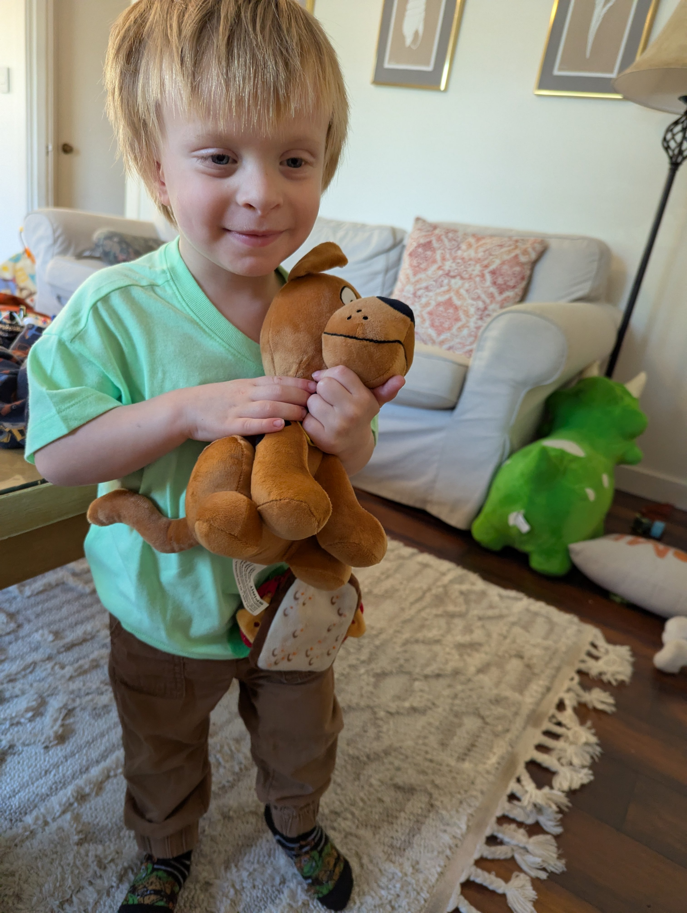
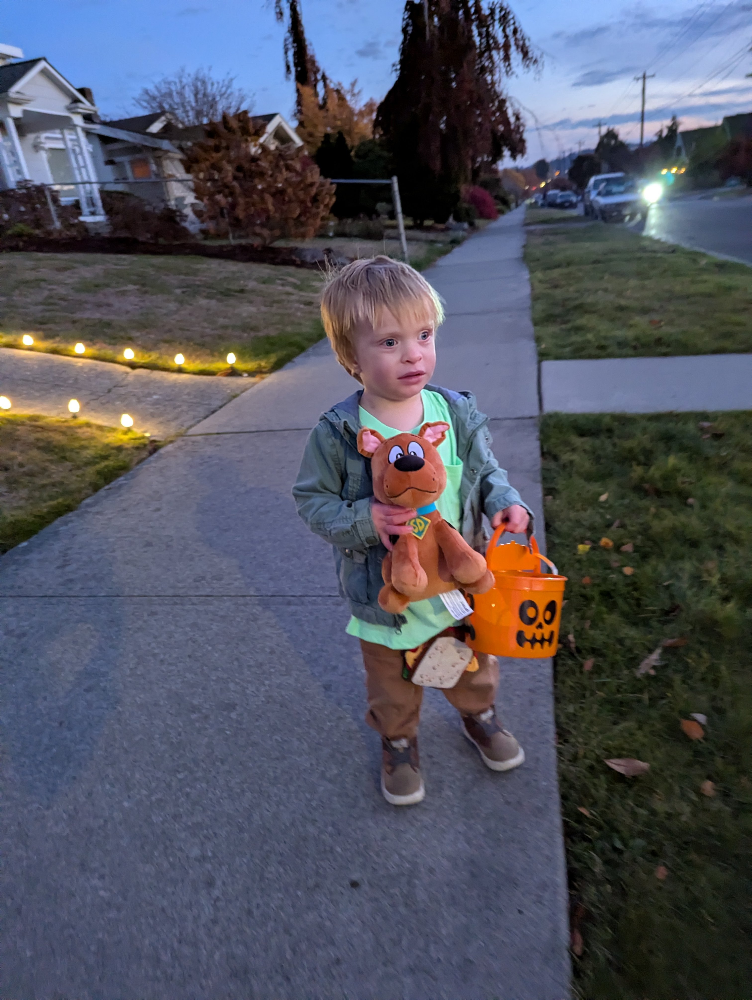

Reflection: God > Death
November 1, 2026
This is not a normal update for Micaiah. He continues to do well. Preliminary MRI results look good, and we await the final reading. Otherwise, we are waiting for Micaiah's first intra-arterial infusion on 11/6. Today, though, I wanted to share a reflection on God's goodness that came into relief while trick-or-treating with the kids.
Micaiah isn't quite old enough to choose his own costume. He has things he likes, but no clear winner when it comes to the costume we put him in. At first we thought we'd set him up with a costume to match with Elias, whose park ranger costume had been decided for months. But as Micaiah's hair continued to grow, so did our collection of nicknames for him. Eventually, we made a last-minute adjustment to what seemed like an obvious costume choice: Norville "Shaggy" Rogers from Scooby-Doo. To tie in with him, I went as one of those troublemaking villains from the franchise, carrying a sign reading, "And I would have gotten away with it..."

Zoinks!
We walked around the neighborhood with some friends, and Micaiah really got a kick from running up to strangers' doors, expectant to receive candy. It was great to spend some time with friends, comment on each other's creativity (or lack thereof in my case), and watch a group of kids running around with the excitement that comes from thinking they'll be allowed to eat all their candy on their own timeline. It was fun, but while some people decorated light-heartedly, others seemed to glorify death and the evil it represents.
I have to admit I noticed the glorification of death more this year than in years past. I'm not suggesting that people shouldn't put a light-hearted skeleton or ghost on their porch (we did that). I'm talking about people creating front-yard displays that seem to revel in death, sometimes portraying the dead with characteristics that should belong only to the living. As the boys walked past those sorts of displays, our attention was drawn particularly to Micaiah. He walked along like any other toddler. Nobody could have known what he's been going through. I couldn't help but see the creepy displays he walked past as symbolic of his journey and God's repudiation of death.
I've heard a lot of discussion over the years about whether or how Christians ought to even celebrate Halloween. Halloween has meaningful roots in Christian observances that remember the faithful dead and encourage us to consider our own mortality. There has also been resistance to Halloween from those who seek to avoid this kind of glorification of death and revelry in fear. I remember growing up with the local Christian radio station playing Christmas music on Halloween (and then not again until after Thanksgiving). I think it had something to do with combating the evil of Halloween with the goodness of Christmas. Churches also often have fall harvest celebrations right around Halloween. I get it. These things can seem discordant with the goodness and light that Christ offers us. The truth is, though, that even though death comes for us all, it is not the final word. Resurrection presupposes death.

In dire need of a Scooby Snack
It is certainly true that fear is not a virtue, nor is death in itself a circumstance to celebrate. While fear may be a healthy, life-preserving response, fear for its own sake offers no benefit to us. Death is a reality of life, but spending time thinking about it is constructive only insofar as it clarifies how we live our lives. "It is better to go to the house of mourning than to go to the house of feasting, for this is the end of everyone, and the living will lay it to heart" (Ecclesiastes 7:2). The celebration of Halloween can certainly be meaningful if it orders our thoughts and actions toward honoring and glorifying God more fully.
Halloween can teach us the value of life and give us occasion to consider the hope of the resurrection. We do not celebrate death or revel in fear; we remember the God who has overcome both. For us, this Halloween was a reminder of God's faithfulness to Micaiah through his cancer treatments. It was a reminder to enjoy every moment we're given in this life. It was a reminder to live faithfully to the One who conquered death. Five months ago, I worried, among other things, about how quickly he would lose his hair. Last night, he dressed up as Shaggy.